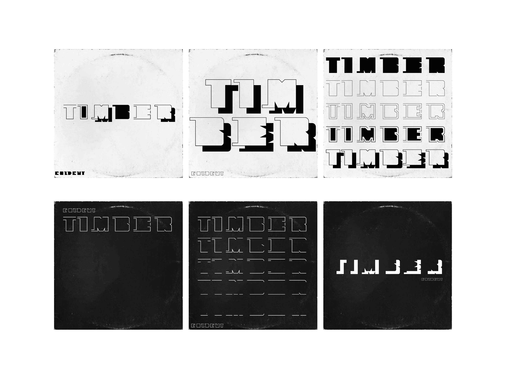

Timber
Timber von Coldcut aus dem Jahr 1998 ist ein musikalischer Protest gegen die Abholzung tropischer Regenwälder. Das dazugehörige Musikvideo von Hexstatic kombiniert die rhythmischen Klänge von Motorsägen, splitterndem Holz und Klopfkäfern mit präzisen geschnittenen Bildern. Diese Verbindung von Klang und Zerstörung bildete die Grundlage für meine Gestaltung. Meine Schrift besteht aus Quadraten, aus denen Formen herausgehackt sind – wie Schläge einer Axt ins Holz. Sie wirkt roh und erinnert an den Prozess des Abholzens.
